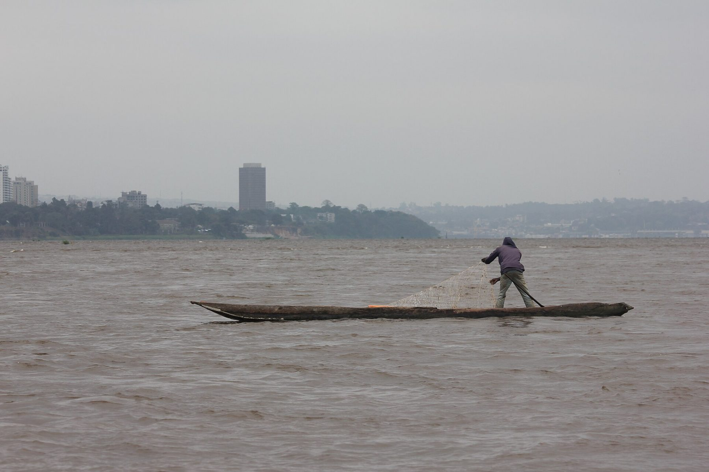
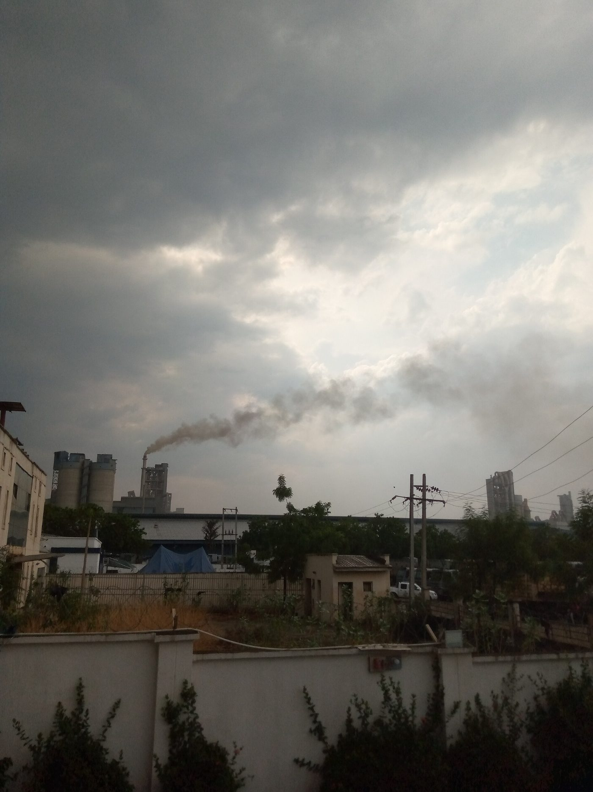

Sustainability and safety
A cement plant emits CO₂ and dust and puts trucks on the road. We measure, we publish and we reduce, year after year.
Indicators, last twelve months
ISO 9001 and ISO 14001 certified (plant and quarry). Environmental and social impact study and management plan approved by the Agence congolaise de l'environnement. Annual report verified by a third party.
Illustrative figures: fictitious company created for demonstration.
Safety at work
Life-saving rules
Eight non-negotiable rules: lock-out, work at height, confined spaces, traffic, blasting, lifting, heat, protective equipment.
Right to stop
Any employee or contractor may stop a task they judge dangerous. No sanction, ever.
Contractors
Same rules, same training, same statistics. Our 300 contractors count in our LTIFR.
Health
24-hour clinic at the plant, annual medical check, respiratory monitoring for dust-exposed posts.
Environment
CO₂
612 kg per tonne of cement. Main lever: lower the clinker factor by adding limestone, target 520 kg in 2030.
Dust
Bag filters on the kiln, mills and bagging. Continuous stack measurement, monthly display in Luvu and Matadi.
Fuels
9% palm-kernel shells and shredded tyres in the kiln, target 25%. Every tonne replaces imported coal.
Quarry
Progressive rehabilitation of worked-out faces, 12,000-plant nursery a year, neighbouring springs monitored by an independent laboratory.



Communities
Luvu, Matadi, Limete: we listen before we act. A quarterly consultation committee brings together community leaders, local authorities, civil society and the company.
Luvu school
Six classrooms rebuilt in 2024, 420 pupils, canteen and borehole. Maintenance covered by the company.
Trades training centre
Electrical, welding, maintenance: 60 young people trained each year in Matadi, half of them hired by our contractors.
Local development fund
0.3% of turnover paid each year, projects chosen with the Luvu and Matadi community leaders.
Water and dust
Road watering, bag filters on every transfer point, monthly measurements posted in neighbouring villages.
Grievance mechanism
Anyone affected by our activities (dust, noise, blasting, trucks, employment) may file a complaint. Reply within 15 days, free of charge, without reprisal.
1. File
Form below, green line, WhatsApp, or complaint box at Luvu and the plant gate.
2. Acknowledge
Complaint number within 48 h, by SMS or in writing.
3. Review
Investigation by the communities team, site visit where needed.
4. Reply
Written reply and measures within 15 days. Appeal possible to the consultation committee.
Green line
0 800 000 000 · WhatsApp +243 81 000 00 00
Free, 7 days a week, in French, Kikongo and Lingala.